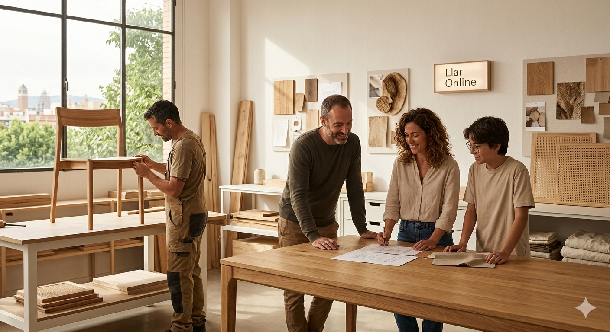
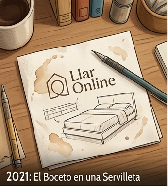
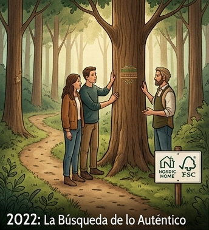
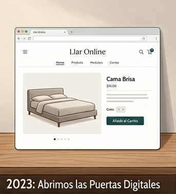
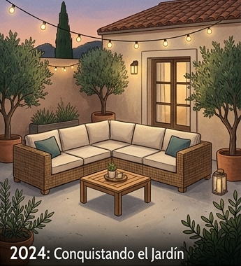
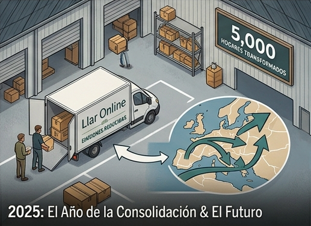
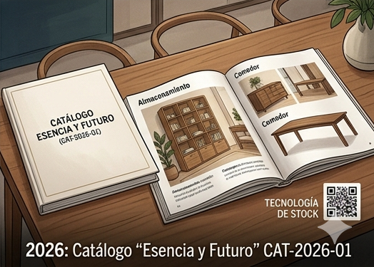

Llar Online – Elevando la esencia de tu hogar.

En Llar Online, no solo vendemos muebles; seleccionamos piezas que cuentan historias. Desde nuestra fundación, nos hemos guiado por tres pilares innegociables: diseño contemporáneo, calidad artesanal y un compromiso firme con la sostenibilidad. Creemos que tu hogar es tu refugio más personal. Por eso, nuestro catálogo CAT-2026-01 ha sido cuidadosamente curado para ofrecer soluciones que equilibran la estética nórdica con la funcionalidad que exige la vida moderna. Trabajamos con marcas líderes como Nordic Home y EcoDream, priorizando materiales nobles como la madera de roble, la teca natural y textiles eco-responsables. Desde el minimalismo de nuestras Camas Brisa hasta la robustez de nuestra línea de exterior Terra Natura, en Llar Online transformamos espacios ordinarios en ambientes extraordinarios. Nuestra misión es simple: que cada vez que cruces la puerta de tu casa, sientas que estás exactamente donde quieres estar.
2021: El Boceto en una Servilleta

Todo empezó en un pequeño estudio en Barcelona. Tras años trabajando en el sector del mueble convencional, nuestros fundadores decidieron que el diseño de alta gama no debería ser un lujo inalcanzable ni estar reñido con el respeto al medio ambiente. Nace el concepto Llar Online.
2022: La Búsqueda de lo Auténtico

Dedicamos este año a recorrer talleres y bosques certificados. Fue aquí donde cerramos nuestras primeras alianzas con marcas como Nordic Home. Nuestro objetivo: asegurar que cada veta de madera de roble tuviera un origen responsable.
2023: Abrimos las Puertas Digitales

Lanzamos nuestra plataforma web. No queríamos ser un "Amazon de muebles", sino una tienda boutique online. Empezamos con apenas 20 referencias de la categoría Descanso, incluyendo la que hoy es nuestra pieza icónica: la Cama Brisa.
2024: Conquistando el Jardín

Tras el éxito en interiores, nuestros clientes nos pidieron llevar la esencia "Llar" al aire libre. Lanzamos la línea Exterior con la colección Terra Natura. Introdujimos materiales innovadores como el ratán sintético reciclado y la madera de teca recuperada.
2025: El Año de la Consolidación &eco;Conquistando el Jardín

Rediseñamos toda nuestra logística para reducir la huella de carbono. Implementamos el sistema de entrega optimizada (esos 4-10 días que ves en nuestro catálogo actual) para agrupar envíos y ser más eficientes. Superamos los 5.000 hogares transformados.
2026: Catálogo "Esencia y Futuro" (CAT-2026-01)

Hoy, estrenamos nuestra colección más ambiciosa. Hemos ampliado a categorías de Almacenamiento y Comedor, integrando tecnología en la gestión de stock para que nunca te falte esa pieza que hará de tu casa un verdadero hogar.